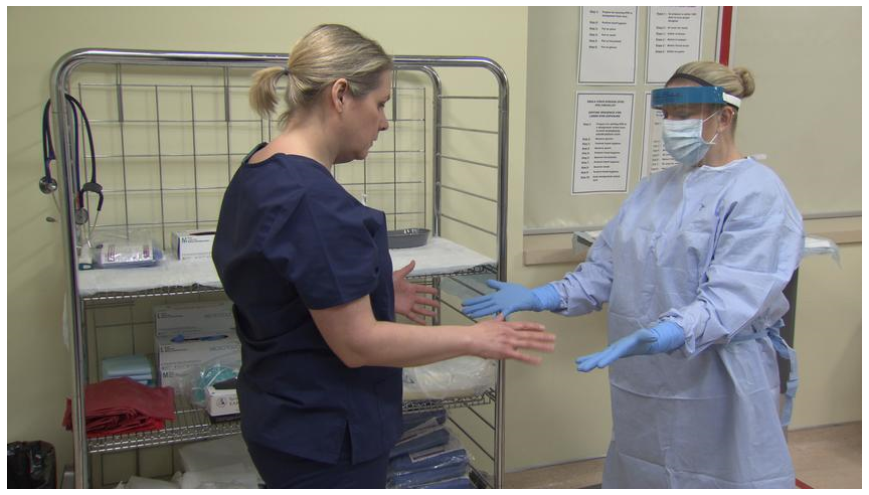
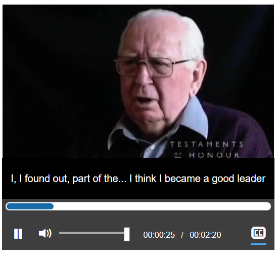

Transcripts
Transcripts (overview)
“Basic transcripts” are a text version of the speech and non-speech audio information needed to understand the content. “Descriptive transcripts” also include text description of the visual information needed to understand the content. Basic transcripts benefit users who are deaf and users who have difficulty processing auditory information. Descriptive transcripts benefit users who are blind or deaf-blind and users who process text information better than audio and visual/pictorial information.
Transcripts are also used by people without disabilities in a variety of situations:
- As an alternative to watching or listening. For many users, this is significantly easier and faster. Some users will want to skim the transcript before playing the media. Other users will want to save data on mobile.
- Used offline, printed or converted to braille.
- To help locate the document via search. Text transcripts are indexed by search engines, making the page more findable.
Do you need a transcript?
For pre-recorded media:
- Video with audio requires a descriptive transcript.
- Video-only requires a descriptive transcript or audio description.
- Audio-only content requires a basic transcript.
For live media broadcasts on the web:
- Video with audio Transcripts are not applicable for live video (live captions are required)
- Video-only may have a descriptive transcript (optional).
- Audio-only requires either captions or a basic transcript.
Locating the transcript
Position the transcript or a link to it directly below or adjacent to the media player.
Good example - Video with descriptive transcript on same page
This video has a transcript of the video on the same page.
Video Transcript:
Transcript - Personal Protective Equipment - Higher Risk Exposure
Use of Personal Protective Equipment when Caring for a Person Under Investigation for Ebola Virus Disease in a First Nations or other Community Health Facility
This training video is based on advice from the Public Health Agency of Canada's Infection Prevention and Control Expert Working Group.
TEXT ON-SCREEN: 'Advice on Infection Prevention and Control Measures for Ebola Virus Disease in Healthcare Settings (Date Modified: 2015-05-19). Canada.ca/EBOLAVIRUS'.
Dr. Tom Wong, Chief Medical Officer of Public Health, Health Canada's First Nations and Inuit Health Branch, provides remarks on-screen.
"My colleague, Dr. David Butler-Jones, and I would like to tell you about this very important initiative to help keep our health care workers safe and ensure they are prepared for infectious disease threats including Ebola or other hemorrhagic fevers.
Health Canada is pleased to collaborate with the Royal College of Physicians and Surgeons of Canada and the Public Health Agency of Canada to bring you these training videos. They will show how to put on and take off the personal protective equipment needed when caring for patients suspected or confirmed to have Ebola Virus Disease, in a First Nations community health setting.
Training and repeated practice is necessary to ensure when personal protective equipment is used, it is done so in a correct and safe way. These videos are to be used along with the in-person training."
Dr. David Butler-Jones, Senior Medical Officer, Heath Canada's First Nations and Inuit Health Branch, provides remarks on-screen.
Good example - Video with transcript on a different page
This transcript opens on a different page:
It's the not the type of thing... I think you can't sit down and write out a formula and say if you meet that formula you are going to be a good leader. I, I found out, part of the... I think I became a good leader and I think part of that was because when I was eighteen, I had a guy for god sakes in the crew that joined the RAF the year before I was born. I'm the youngest incidently of the ten crew members, so you grow up in a hurry, and I think you have to know your people. Now I work in a service club and have now for 45 years and one of the biggest tasks is to get the presidents and that to realize that every member in their club is different and you better have an ear for everyone of them. We'd go to, I went to staff college and studied leadership. We left staff college realizing you can't define it. You know, some people say you either got it or you haven't got it. I don't know whether it goes back that far into your genes or not. I think consideration for people, I think being yourself, not a lot of the things that they teach you out of a book, no. And the other too, you know, I think you got to, you got to live it, you know. I flew for 31 years. I'm sure it annoyed my wife many, many a time, you know, because you always had to go somewhere and they were always at the least convenient time, but you do it. And you set by example, I think is a part of leadership.
Presenting and styling transcripts
Structure the information in logical paragraphs, lists, and sections. If starting with a captions file, combine several lines into paragraphs.
If the transcript is on another page, provide a link back to the audio or video file.
Good example: Descriptive transcript sourced from captions and descriptions tracks
In this example, time-stamped sentence fragments in caption and description tracks are combined into sensible paragraphs for a descriptive transcript. The transcript sets the audio information and the visual description side-by-side in table columns.
Example VTT caption file of audio information (excerpt)
WEBVTT
00:00:07.261 --> 00:00:13.040
Some physical disabilities make using a mouse difficult or impossible.
00:00:20.160 --> 00:00:26.280
To include everyone, ensure your website or app is operable by keyboard.
00:00:27.140 --> 00:00:30.730
This includes on mobile devices.
00:00:34.731 --> 00:00:40.880
Keyboard emulators are used by a wide variety of assistive technologies
00:00:41.620 --> 00:00:45.840to provide equivalent functionality to a mouse.
Example VTT file of audio description of visual information (excerpt)
WEBVTT
00:00:02.120 --> 00:00:06.240
<v Audio Descriptions> Website accessibility: Designing for the keyboard.
00:00:14.500 --> 00:00:19.510
<v Audio Descriptions> A man with a wheelchair is using a mouth-stick to type.
00:00:31.518 --> 00:00:34.520
<v Audio Descriptions> A woman plugs her phone into a portable keyboard.
00:00:46.521 --> 00:00:49.142
<v Audio Descriptions> A woman uses an on-screen keyboard.
Example descriptive transcript from the time text files above (excerpt) in table format
|
Audio |
Visual |
|
Website accessibility: Designing for the keyboard |
|
|
Some physical disabilities make using a mouse difficult or impossible. |
A man with a wheelchair is using a mouth-stick to type. |
|
To include everyone, ensure your website or app is operable by keyboard. This includes on mobile devices. |
A woman plugs her phone into a portable keyboard. |
|
Keyboard emulators are used by a wide variety of assistive technologies to provide equivalent functionality to a mouse. |
A woman uses an on-screen keyboard. |
Example descriptive transcript from the time text files above (excerpt) in text format
[Website accessibility: Designing for the keyboard]
Narrator: Some physical disabilities make using a mouse difficult or impossible.
[A man with a wheelchair is using a mouth-stick to type.]
To include everyone, ensure your website or app is operable by keyboard. This includes on mobile devices.
[A woman plugs her phone into a portable keyboard.]
Keyboard emulators are used by a wide variety of assistive technologies to provide equivalent functionality to a mouse.
[A woman uses an on-screen keyboard.]
Interactive transcripts
Interactive transcripts are placed adjacent to the media player. As words are spoken, the matching words in the transcript are highlighted. Users can click a phrase anywhere in the transcript to navigate to that exact point in the video (or audio). Interactive transcripts are built from timed text files specified in the <track> element.
Good example: Interactive transcript
The Able Player includes an interactive transcript feature, built from the WebVTT chapter, caption and description files as the page is loaded. Keyboard users can choose to keyboard-enable the transcript, so they can tab through its content one caption at a time and press the Enter key to play the media at the desired point.

Source: Able Player Video Demo #5: Video player with interactive transcript, subtitles, and chapters
What is included in a transcript?
For what to include in a basic transcript, see the section Transcribing Audio to text for guidance on speech and non-speech audio information. Descriptive transcripts also require description of important visual information; see the section Description of visual information for guidance.